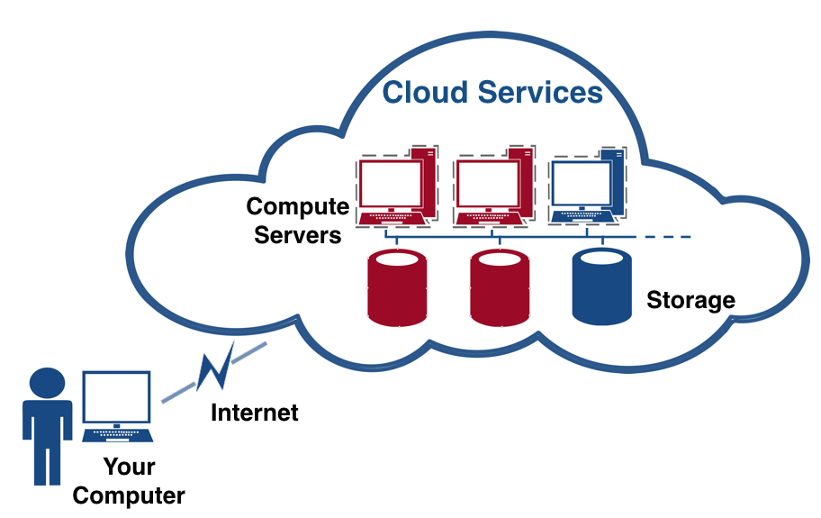
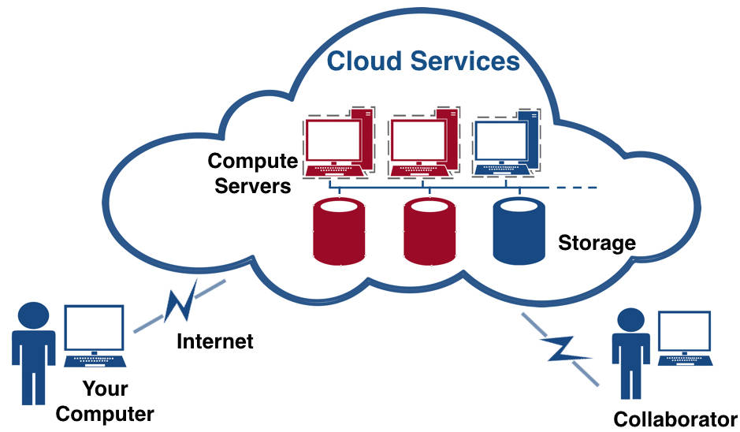
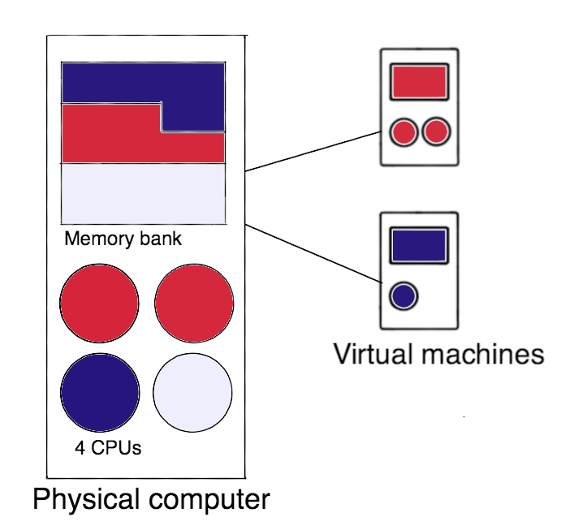
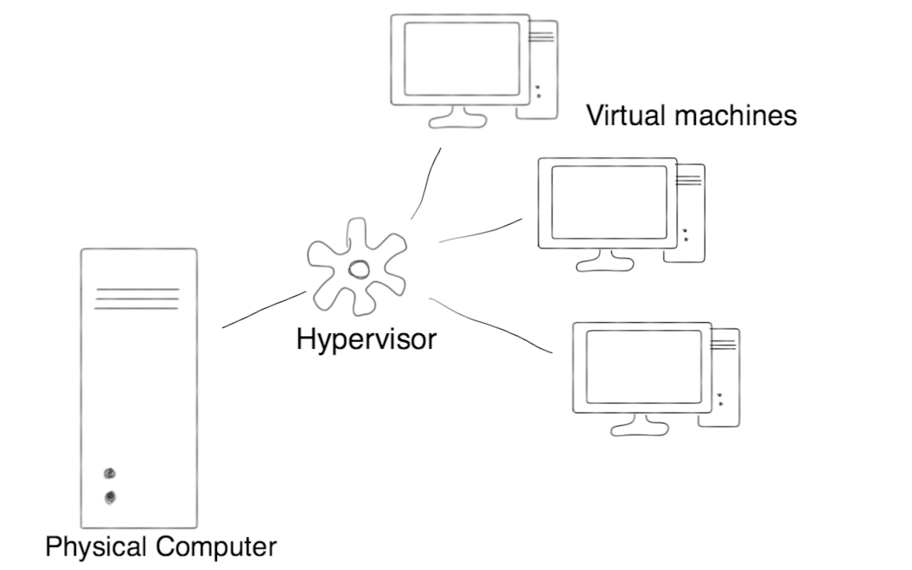
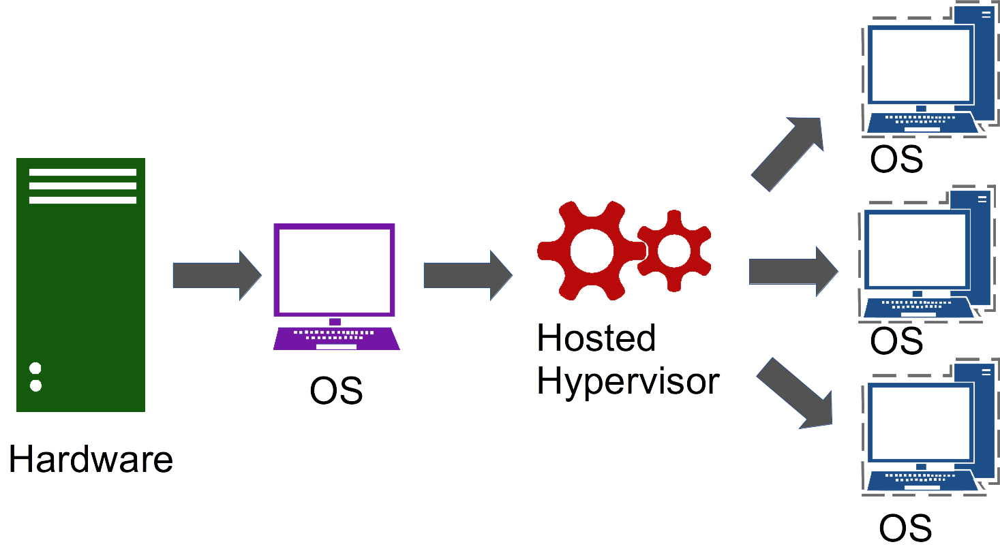
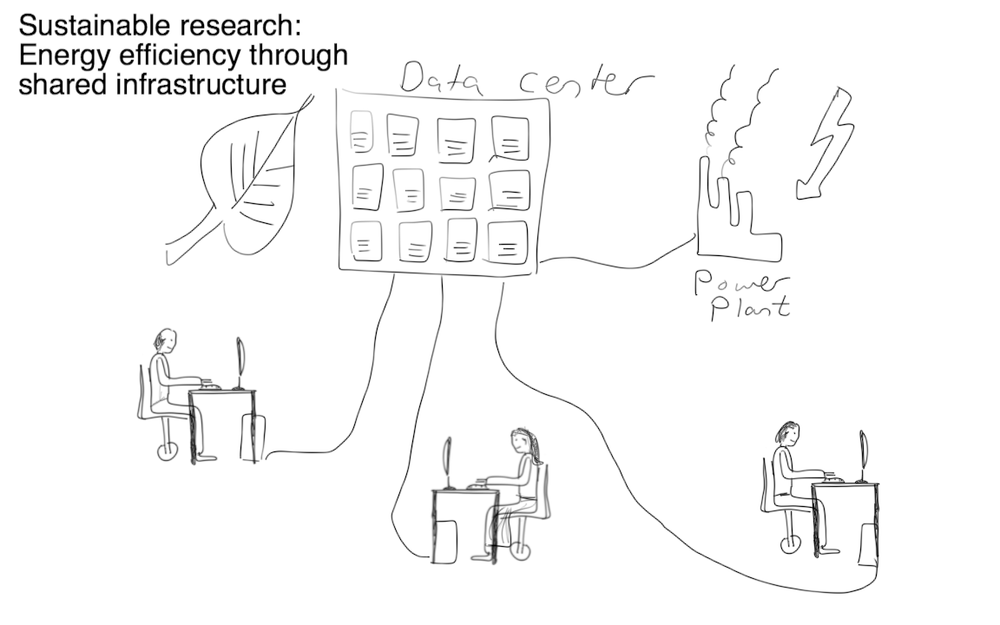

Module 1
Overview of cloud computing and the Nectar services
Introduction
This documentation provides a general introduction to cloud computing and an overview of the NeCTAR Research Cloud, Virtual Laboratories and eResearch tools which are available to researchers around Australia. What is Cloud Computing? How can cloud computing benefit your research? What are the common concerns when adopting cloud computing? What is NeCTAR, and which services does it provide for researchers? This introduction describes the structure of this course and provides an introduction to the Cloud terminology and concepts as well as the NeCTAR services available to researchers in Australia.
Videos
The following videos go through most of the content in this module and offer a less in-depth description of the subject than the documentation does.
https://www.youtube.com/watch?v=OR9hMyom4gI
https://www.youtube.com/watch?v=To3nUTwilCw
Conventions
The notation throughout the training documents can be interpreted as follows:
Words in italics are used for names and terminology, e.g. name of a software, or name of a computing concept. It may also just emphasise a word in the traditional way. Quotations are also written in italics and are put in between quotatioin marks.
Words in bold are used to highlight words which identify important concepts of a paragraph, to make it easier for users to skim through the text to find a paragraph which explains a certain idea, concept or technology.

Additional information which is optional to read is displayed in info boxes like this one.

Important information is displayed in boxes like this one.

Definition of terms are displayed in boxes of this style.

Possibly specific prerequisites for reading a particular section are contained in this type of box at the beginning of a section.
Course overview
In this course we will introduce cloud computing, how it can benefit your research and how you can get started with using the cloud for your research.
This course is structured in 10 separate Modules which are largely independent of each other. Depending on your existing level of expertise, you may select the Modules which discuss the relevant topics you want to learn about. Where relevant, references to other modules are given in order to point you to other modules where you can find more information about a certain topic.
The modules are structured as follows:
-
Module 1: Overview of cloud computing and the Nectar services In this module you will learn what cloud computing is, what types of services NeCTAR offers, and how cloud computing may benefit your research.
-
Module 2: Virtual Laboratories and eResearch Tools This module provides an overview of the eResearch Tools and the Virtual Laboratories that are offered by NeCTAR services. Both the tools and the virtual labs offer “ready to go” tools you may use.
-
Module 3: Use Cases Aside from tools which are ready to use for you on the NeCTAR cloud (discussed in Module 2), you may also utilize a service which you can configure more individually: You may set up own virtual machine on the NeCTAR Research Cloud. This module discusses common use cases for the NeCTAR Research Cloud and the research outcomes they can enable.
-
Module 4: From PC to Cloud or HPC You may have heard of “High Performance Computing” (HPC), or you may already be using it. This module will discuss the differences between Cloud Computing and HPC, and provide an overview of pros and cons of moving from traditional desktop computing to Cloud or HPC infrastructure.
-
Module 5: The Research Cloud lifecycle This module provides a high level overview of the end-to-end lifecycle of using the cloud. You will learn how to get onto the research cloud; how the merit allocation process works, and how to get support. You will get an overview of how to track utilisation; necessary housekeeping you will need to do (e.g. updates, backups); how to terminate your services without losing anything, and how to mitigate risks.
-
Module 6: Resource requirements for computing and storage In this module we will discuss factors which help you determine the amount of resources (computing and storage) you require. We will take a look at the different types of storage that are available to you, which will help you decide which type is most suitable for your research purposes.
-
Module 7: Launching and Connecting After having learned about the NeCTAR Research Cloud and the services it provides, it is now time to get some hands-on experience. This module delivers a tutorial on how you can create and launch your own virtual machine, how you can connect to it and how you can attach your storage.
-
Module 8: Security This module provides an introduction to key security issues, dangers and consequences when running a virtual machine in the cloud. Practical advice for making your machine secure and preventing it from being hacked. An introduction to data encryption including usage of a variety of tools is also given.
-
Module 9: Backing up and packing up In this module we will discuss backup strategies for when things do go wrong. You will learn how to make snapshots and how to recover your virtual machine using this snapshot. You will also learn how to backup your data and how to terminate your virtual machine without losing anything.
-
Module 10: Beyond the Dashboard This last module provides an overview of the OpenStack command line tools — how to configure them to interact with the cloud. This module is designed for advanced users who want to learn more about command line tools to control the NeCTAR resources. This can help to automate procedures, for example with scripts for backup processes. Worked examples of the OpenStack command line tool openstack are included in this Module.
What is Cloud Computing?
Imagine several servers in some data center are analyzing your large research data set. They are exchanging possibly huge amounts of data while they analyze your data in tandem. At the same time, you have access to large amounts of data storage located at that data center. You don’t need to have this expensive server and storage infrastructure at your research organisation — you just access it over the Internet. The servers and storage are hosted at the data center, or as is commonly said, they are “in the cloud”.
You can take advantage of powerful processing even if the university or research institution does not provide the large-scale compute and storage hardware that you require. You can easily share data with colleagues, simply by giving them access to the storage you maintain “in the cloud”.
Simply put, cloud computing means storing and accessing data and programs over the Internet instead of your office computers hard drive.
The National Institute of Standards and Technology has defined Cloud computing as
“A model for enabling ubiquitous, convenient, on-demand network access to a shared pool of configurable computing resources (e.g., networks, servers, storage, applications and services) that can be rapidly provisioned and released with minimal management effort or service provider interaction.”
It is not clear where the term “cloud” comes from. One popular explanation is that it stems from the way in which charts in network computing are drawn. Often, a set of servers accessible through the Internet are surrounded by a cloud-like shape, in order to illustrate that they are located at some remote place accessible through the Internet. Sometimes, in computer network diagrams the Internet itself is illustrated as a cloud-like shape.

The image above shows how you connect to your cloud computing infrastructure (computers and storage) via the Internet (Used resources are displayed in red — here, only a virtual machine is in use). Your local computer is only used to control your resources from remote and display things on your screen — the data and compute servers are actually “in the cloud”.
So why is this good?
Imagine your research software requires lots of resources to run optimally: Either more computers working in parallel, or a lot of storage. Your research organisation may not be able to provide such resources to you, or if you were to set up several computers in your office, that would incur lots of costs and maintenance. In the cloud, you can easily scale up to the resources you require at the time you need them (see image below), and release the resources when you don’t need them any more. After resources have been released, they don’t incur any more costs or maintenance activities.

Another advantage is that the Cloud enables efficient research collaboration: Collaborators may be granted access to the same services, and you can work together on the same platform without the need for synchronization.

There are more advantages, and also some drawbacks, to migrating your research IT infrastructure to the cloud—but we shall talk about this later on in more depth.
To sum up, cloud computing enables research infrastructure to be
-
more flexible
-
easier to use
-
cheaper
What the cloud is not
-
It does not mean accessing your local hard-drive and computer. This is called local storage and computing, because it is physically close to you. This is how the computer industry worked for decades and the model that you are probably most familiar with.
-
It does not mean having a networked attached storage (also called NAS) which is located in your local facilities, e.g. in your office, lab or at some facility which is administered by your University. This is a bit confusing because some NAS let you access the data remotely via the Internet, e.g. from home. Sometimes the network may be called something with “cloud”, which makes things a bit confusing.
Definition of Cloud Computing
The National Institute of Standards and Technology’s definition of cloud computing identifies “five essential characteristics”:
-
On-demand self-service.
“A consumer can unilaterally provision computing capabilities, such as server time and network storage, as needed automatically without requiring human interaction with each service provider.”
In this course, you will learn how to provision your resources (e.g. Computing and Storage) from the Dashboard using a regular Web-browser.
-
Broad network access.
“Capabilities are available over the network and accessed through standard mechanisms that promote use by heterogeneous “thin” or “thick” client platforms (e.g., mobile phones, tablets, laptops, and workstations).”
You may access your compute and storage services via a variety of devices. In this course, you will use your computer or laptop to follow the exercises.
-
Resource pooling.
“The provider’s computing resources are pooled to serve multiple consumers using a multi-tenant model, with different physical and virtual resources dynamically assigned and reassigned according to consumer demand. There is a sense of location independence in that the customer generally has no control or knowledge over the exact location of the provided resources but may be able to specify location at a higher level of abstraction (e.g., country, state, or datacenter). Examples of resources include storage, processing, memory, and network bandwidth.”
In other words, cloud computing serves a large amount of customers with their compute, storage and software needs. You can choose the data center in which your resources will be located, but you cannot choose a particular computer or hard-drive where your software is running or your data is stored.
-
Rapid elasticity.
“Capabilities can be elastically provisioned and released, in some cases automatically, to scale rapidly outward and inward commensurate with demand. To the consumer, the capabilities available for provisioning often appear to be unlimited and can be appropriated in any quantity at any time.”
One major advantage of cloud computing is scalability, in the context of cloud computing often referred to as elasticity — You can quickly re-provision resources, e.g. at times when your demands are higher before a paper deadline or when you need to run experiments, you can request more resources, and release them again after you are finished.
-
Measured service.
“Cloud systems automatically control and optimize resource use by leveraging a metering capability at some level of abstraction appropriate to the type of service (e.g., storage, processing, bandwidth, and active user accounts). Resource usage can be monitored, controlled, and reported, providing transparency for both the provider and consumer of the utilized service.”
The amount of resources you use can be monitored and metered. In many cloud computing services, you pay for the amount of resources you use. The NeCTAR services are free to you. We will talk about NeCTAR services shortly.
–– Resource: “The NIST Definition of Cloud Computing” (PDF). National Institute of Standards and Technology. Retrieved 21 April 2015.
In summary
Cloud computing is characterised by on-demand deployment of virtual and highly scalable resources. The traditional local computing model requires purchasing a cluster of computers, finding space in your local lab and hiring an administrator. This is a significant expenditure with high maintenance costs. The facility sits idle when not needed, which is a waste of resources. Instead, with cloud computing, you can outsource to remote facilities, and use only what you really need.
Cloud services
Cloud providers offer a variety of services, the most common of which are:
-
Compute
Computing resources made available to you in form of a virtual server. We will talk more about such virtual machines in a moment.
-
Storage
Storage is made up of many distributed resources, but the storage still acts as one. You can dynamically extend or decrease requirements.
Storage includes the traditional “Volume storage” (which acts as a hard disk) and also “Object storage” (storage of individual files). We will talk more about storage in the later training packages starting from Module 6.
-
Networking
Virtual servers of several users may be connected through a network just as with physical computers networked together. This is called “Virtual Lan” (VLAN). Virtual networking is not covered in this course.
-
Databases
Cloud computing can be used to provision relational and non-relational database engines. Discussion of databases is not going to be covered in this course.
-
Various software services
-
Development & deployment platforms
Examples of cloud computing
Some examples of cloud computing you are probably already using include
Google Services: Google Drive handles on-line storage on the google servers, which works with the cloud apps Google Docs, Google Sheets, Google Slides and more. You can use Drive on computers, iPads or smartphones.
Apple iCloud: Mainly used for online storage, backup, and synchronization of mail, contacts, calendar, and more. Apple offers cloud-based versions of its word processor Pages and other software like Keynote for presentations and Numbers for spreadsheets. They can be used by iCloud subscribers.
Amazon Cloud Drive: Storage at the big retailer is mainly for music, preferably MP3s that you purchase from Amazon, and images. The Cloud Drive also holds anything you buy for the Kindle eReader.
Dropbox and similar services offer on-line storage. You can choose to only store your files on-line, or additionally keep a synced version of them on your local hard-drive. Because of the synchronization of local and online storage, these services can be characterized as a hybrids of cloud and local storage.
Facebook, Instagram and other social media platforms.
Chromebook: This is an example of a device that is completely based on the cloud. This is a kind of laptop which has very simple hardware: It runs the Chrome OS, but everything else is online: Apps and storage are in the cloud. The main drawback of such devices is that they are basically useless if there is no Internet connection. Currently, at the time of writing (April 2015), work is being done to address this issue by expanding the offline capabilities of the Chromebook.
Types of cloud services
There are 3 different types of cloud services which can be distinguished. They provide different levels of abstraction to computing services to the user.
Software-as-a-Service (SaaS)
The customer (the user or business) subscribes to an application which they then access over the Internet. This is sometimes referred to as on-demand software and is usually priced on a pay-per-use basis, or using a subscription fee. Users do not manage the infrastructure and platform where the application runs. This eliminates the need for them to install and run the application on the user’s own computers, simplifying maintenance and support.
Examples: Dropbox, Salesforce.com, Google Docs.
Platform-as-a-Service (PaaS)
The customer can create its own custom applications. Specialized application programming interfaces (APIs) are provided for building applications on the Internet. PaaS services provide a platform on which businesses can create and deploy custom apps, databases and services integrated into one platform.
Examples: Windows Azure and Google App Engine.
Infrastructure-as-a-Service (IaaS)
Computing resources are provided to the consumer. Users are free to set the resources to use as they want. Providers of IaaS services offer computers (most typically virtual machines) and other resources (like storage, firewalls, networking and software bundles).
IaaS services provide a “backbone” that others can rent. For example, Netflix provides their services by using Amazon’s cloud services.
Examples: Amazon Web Services, Rackspace, and Google Compute Engine and the NeCTAR services.
–– Definition of service types according to “The National Institute of Standards and Technology (PDF, retrieved April 21st, 2015).
Software as a Service(SaaS).
The capability provided to the consumer is to use the providers applications running on a cloud infrastructure. The applications are accessible from various client devices through either a thin client interface,such as a web browser (e.g., web-based email), or a program interface. The consumer does not manage or control the underlying cloud infrastructure including network, servers, operating systems, storage, or even individual application capabilities, with the possible exception of limited user-specific application configuration settings.
Platform as a Service (PaaS). The capability provided to the consumer is to deploy onto the cloud infrastructure consumer-created or acquired applications created using programming languages, libraries, services,and tools supported by the provider (this capability does not necessarily preclude the use of compatible programming languages, libraries, services, and tools from other sources). The consumer does not manage or control the underlying cloud infrastructure including network, servers, operating systems, or storage, but has control over the deployed applications and possibly configuration settings for the application-hosting environment.
Infrastructure as a Service(IaaS). The capability provided to the consumer is to provision processing, storage, networks, and other fundamental computing resources where the consumer is able to deploy and run arbitrary software, which can include operating systems and applications. The consumer does not manage or control the underlying cloud infrastructure but has control over operating systems, storage, and deployed applications;and possibly limited control of select networking components (e.g., host firewalls)
Researchers will probably find IaaS services most useful, while SaaS tools are broadly useful for individual work and collaboration.
The 3 service types can be characterized with two properties:
-
Constrainedness (how much the user can control) and
-
Automation
Services which are less constrained give the user more control, but instead also offer less automation, and more work is required to get the desired applications up and running. The figure below shows examples of services along the scales of constrainedness and automation. Services to the left are less constrained, but also provide less automation. Towards the right end of the scale, capabilities are provided “out of the box,” but are also more constrained in how they can be used.

Virtualization
The main technology used to enable cloud computing is virtualization. This basically means that the hardware is “simulated”, and therefore virtual. The virtual hardware runs on an actual machine. We can simulate a whole computer including the operating system. Several virtual computers can then run on one larger, more powerful computer.
A virtual machine (short: VM) is a software implementation of a machine (for example, a computer) which executes programs just like a physical machine. The term machine most commonly refers to a computer, but it could also be another type of hardware. The virtual machine runs on a physical computer which may run several VMs at a time, distributing the workload of the VMs onto its physical CPUs and memory. A virtual machine appears to the user as a real computer.
The image below shows a symbolic physical computer with 4 CPUs, which runs two virtual machines: The first with two CPUs, the second with one. The virtual machines share the hardware on the physical computer to simulate their hardware. 
One physical computer can theoretically run a large number of virtual machines. One physical CPU can simulate several virtual CPUs, which then share the processing time. This is sometimes acceptable because often CPUs actually only use a small percentage of the CPU, when there is not much to compute at the time. So it is possible to simulate for example 4 virtual CPUs on one real CPU, and if 3 of them are idle (use 0% of the CPU), the 4th is able to use 100% of the processing capacity. Of course, if the several virtual CPUs share the processing power of one physical CPU, there is a competition and not all virtual CPUs can run at the same speed. Such competition is often referred to as “noisy neighbours”. To avoid this problem, NeCTAR locks each virtual CPU to one physical CPU; so each virtual CPU is always guaranteed to have the full CPU capacity exclusively available, without facing competition.
Each virtual machine is a fully simulated computer which can have its own operating system and software running. For example, a physical computer that is operating on Microsoft Windows may run two virtual machines: (1) one with the Ubuntu Linux operating system, and (2) another VM with Windows. Each virtual machine looks like an actual computer to the user. They can log on to the computer and use it as if it was a real one. It is possible to connect via a remote desktop if it has been configured; or, connecting via a command line is possible too.
We can run many of such virtual machines on just one (more powerful) physical machine. With several machines running on just one, idle computing resources can be allocated and used more efficiently.
Not all computers are able to run a full virtualization of a virtual computer. Full virtualization is achieved when the virtual machine is identical to a real computer. Specialized hardware assistance is required for full virtualization, namely extensions of standard CPUs. So it is likely that your regular office computer cannot run a full virtualization of a VM. Cloud service providers usually are equipped with such specialised hardware — The NeCTAR infrastructure can run full virtualizations.
Virtual Machine vs Real Machine
A “real machine” is a physical computer, whereas the “virtual machine” is a simulated computer running on another physical computer. In short, the differences and similarities between a real and a virtual machine are as follows:
Similarities: They have an operating system, network access (a real IP address), and hard disk storage.
Differences: For virtual machines, there is no hardware maintenance! You can copy a virtual machine (take a “Snapshot”) for backup purposes, and you can customise it rapidly.
Hypervisors
The Hypervisor or Virtual Machine Manager is the software that manages communications between the physical machine’s processor and memory, and the VMs running on it. The hypervisor is a piece of software that conceptually sits between your virtual machine and the physical computer and manages your virtual machine.
When you want to create or destroy your virtual machine, the hypervisor takes care of that for you, and while your machine is running, the hypervisor manages the execution of your virtual machine.

The downside to this virtual world is an increased opportunity for hackers to exploit vulnerabilities. The attack surface has increased because vulnerabilities may not only exist in the physical equipment, but also in the hypervisor. However such vulnerabilities can be addressed if proper care is taken. Security issues and how they can be addressed is subject to discussion in Module 8.
There are two types of hypervisors: (a) Type-1: native or bare-metal hypervisors and (b) Type-2: hosted hypervisors.
The difference is that (a) runs directly on the physical computer’s hardware (the hypervisor is like an operating system for itself). Therefore, they are sometimes called bare metal hypervisors.

Hypervisor (b) runs on top of an operating system, just like normal computer programs do, therefore it is referred to as hosted hypervisor.

There are also hypervisors that are a blend of both types (a) and (b). The Kernel-based Virtual Machine (short: KVM) for example, which is used in the NeCTAR cloud, is a modified version of the underlying linux operating system.
FAQ
Question: How many VMs can run on one physical core?
Answer: Normally, the hypervisor won’t lock one VMs virtual processor to a specific physical core. Virtualization is done to allow better utilization of available hardware. If you only allocated one virtual processor to each physical processor, you would likely have lots of idle time, because each VM is unlikely to be using 100 percent of its CPU.
Therefore, it is common to allocate a larger number of virtual processors to fewer physical processors. The hypervisor takes care of scheduling the CPU work across the physical cores.
Note: At the time of writing, the NeCTAR cloud allocates one physical core to each virtual core, so users never share a core with others. However, this may change in future.
Question: I have heard of the Java virtual machine (JVM) – what’s the difference to a virtual computer?
Answer: In the context of cloud computing we are talking about system virtual machines in which the whole computer incl. the OS is simulated. However the concept of virtualization works at different levels, there also are process or application virtual machines, which support only one process (as opposed to lots of programs running on an OS). The supported “process” is the actual application to be run, i.e. the Java Application.
JVM is one example for an application virtual machine. The VM is started and shut down together with the program, so the program basically “runs on top” of the application virtual machine. The main purpose of this is to provide a decoupling element (the VM) between the program and the OS. The program can then be developed independent of the platform, and only dependent of the VM. Different versions of the VM may be provided for each OS (e.g. JVM for Windows, Linux, Mac, etc).
Common concerns
There are a number of common concerns among people who are about to make the decision whether to move their computing resources and storage to the cloud. Such concerns include
-
Uninterrupted access to services
-
Privacy & Security
-
Portability of tools and data to and from different cloud platforms
-
Absence of software tools
-
Uncertainty in cost prediction
Particularly the first point concerns many users first: What if the Internet drops out? What in case of a data center outage? Well.. it’s true, you rely on the Internet for your services. However while you won’t be able to access your services at that time, it doesn’t mean they stopped working: For example, your analysis software on your compute resources will still be running—you just cannot get access to the current state. If the data center has an outage, that also may affect your running programs. However you can trust the data center is run professionally to reduce such occurrences as much as possible. The risk of an outage cannot be completely eliminated, just as is the case for your research organisations IT infrastructure; and your local computer has probably a higher risk of crashing.
The matter of what happens to your data and who may illegally gain access to your services and data it is also a common concern. Researchers may also be concerned about difficulties in porting their software to the cloud, or they are not sure if their software will run on the cloud. Cloud providers usually charge per-use, so it can be hard to predict the costs.
In this course we will discuss all common concerns and how NeCTAR addresses them in order to make cloud computing more accessible to researchers. In particular, Module 8 is going to cover security related topics.
History
We will only take a brief look at the history of cloud computing in this course. If you are interested in more details, we refer for example to the Wikipedia page.
The 1950s
Early forms of cloud computing were mainframes and connected clients. So-called “dumb-terminals” (clients) that lacked local storage were used to connect to a local server, or “mainframe”. Today, the Chromebook uses the same idea of using a very simple device to connect to a remote server which provides computing and storage capacity.
The 1990s
Scientists and technologists explored ways to make large-scale computing power available to more users. A technique called “time-sharing” was used to achieve this. Algorithms were developed to optimize CPU usage and increase efficiency for end users.
Salesforce.com, founded in 1999, was the first successful example of providing software-as-a-service (SaaS). Salesforce is a CRM tool for sales executives providing features like managing customer details, running promotions etc.
The 2000s
Cloud computing comes into existence, and many services for cloud computing are launched.
In 2006, Amazon Web Services (AWS) was one of the first to provide storage space and computing resources according to the cloud computing model. AWS provides online services for businesses to help meet their demands in regards to computing, storage and more. The most well-known amazon services are Amazon EC2 (for computing services) and Amazon S3 (for storage). AWS is now one of the biggest cloud computing providers.
In early 2008, OpenNebula became the first open-source software for deploying clouds.
In 2008, Microsoft Azure became available. Azure provides a development platform as a “pay-per-use” billing model. Around the same time Google Cloud Platform starts providing a very similar service.
The 2010s
In July 2010, Rackspace Hosting and NASA jointly launched an open-source cloud-software initiative known as OpenStack. The OpenStack project intended to help organizations offer cloud-computing services running on standard hardware. NeCTAR also uses the OpenStack framework.
In 2011, IBM announced the IBM SmartCloud framework.
Mid 2012, Oracle announced the Oracle Cloud. This cloud provides users with access to an integrated set of IT solutions, including the SaaS, PaaS and IaaS services.
NeCTAR Services
Through a series of “town hall” meetings in 2010, the Australian research community voiced their need for a flexible, low cost computing resource that they could access on demand. A cloud solution quickly became the sought after approach, with its low barriers to entry well matched for the collaborative nature of academic research.
The Australian government is now funding a cloud that is making it simple for researchers across disciplines to access IT resources, collaborate, and share their findings: NeCTAR (short for National eResearch Collaboration Tools and Resources) is an Australian Government project conducted as part of the Super Science initiative and financed by the Education Investment Fund.
The NeCTAR project aims to support the connected researcher who has access to a full suite of digitally enabled data and resources, specific to their research. The vision is to enhance research collaboration by building information and communications technology infrastructure. NeCTAR is building:
-
Virtual Laboratories
-
eResearch Tools
-
The Australian Research Cloud
We will talk about Virtual Laboratories and eResearch Tools in Module 2.
The majority of this course will deal with the Australian Research Cloud. So at this point let’s have a glimpse at what the Research Cloud (RC) is.
The Australian Research Cloud is offering a secure and robust hosting service:
-
The main function of the Research Cloud is to provide “Infrastructure as a Service” (IaaS). Virtual machines and cloud storage can be provisioned on demand through a web Dashboard or an API.
-
The Research Cloud is available for research use to any academic researcher in Australia.
-
Access to the NeCTAR Cloud dashboard is done through the Australian Access Federation (AAF) (or Tuakiri in New Zealand). This allows you to login using your institiutional username and password.
-
Any researcher who logs in to NeCTARs web Dashboard can immediately have access to a small Project Trial allocation (2 cores for 3 months).
-
To obtain a larger allocation you need to submit an allocation request through the web Dashboard.
-
-
The Cloud consists of 8 Nodes and around 32,000 processor cores distributed across Australia and New Zealand
- A Node can be seen as a data center at a physical location which provides the services. All Nodes are part of a federated cloud. A user may specify the zone in which their virtual machines will be situated, so they can get the best network responsiveness.
-
The completed cloud will be a very significant Australian resource and one of the largest OpenStack based clouds in production worldwide.
- OpenStack is a set of software tools for building and managing cloud computing platforms. Backed by some of the biggest companies in software development and hosting, as well as thousands of individual community members, many think that OpenStack is the future of cloud computing.
Today, NeCTAR enables Australian researchers to easily put their ideas, tools, research applications and data online. The new cloud capabilities have equipped researchers with the ability to easily share and manipulate their data, and publish it to other researchers anywhere around the world.
For a more detailed story about NeCTAR using OpenStack, please refer to
the OpenStack NeCTAR user story.
The NeCTAR services are free to you, however you need to request the amount of resources you need in advance. When you have used up your resources (e.g. processing time), you will have to request an extension.
Benefits for your research
Researchers are free to concentrate on their work rather than on obtaining funding for the computing resources, and spending time with provisioning & maintenance of hardware. The shared environment means greater ease and opportunity to collaborate.
The cloud’s flexibility offers new usage models for computing in research:
-
Computational requirements for research are usually ad hoc (e.g. before a deadline). For some computational models, the resource requirements increase by a very large extent only for a short time. For example, when some experiments need to be run before the paper is due. Cloud computing is flexible enough to support this model. For example, the weekend before a paper deadline, students start up hundreds of computers (virtual machines) to finish experiments in a short time. After the paper is submitted, these computers are “switched off” again (demanding no further costs and space in the lab, hence no lost capital investment).
-
Reproducible research aims at outcomes that can easily be reproduced at a later time or by someone else. With cloud computing, you can save the virtual machine which was used to perform experiments or an analysis: you can take a “snapshot” of your operating system, programs and data. You can even make this snapshot public, cite it in the paper and anyone can then run this virtual machine to reproduce the results.
-
In the classroom, each student may use their own isolated working environment (the VM) in which they install their own software, run jobs without contention, and break things without risk. Students can flexibly get access to virtual laboratories and materials from anywhere, e.g. their home PCs, laptop, etc. This will avoid universities having to invest in laboratory facilities and staff.
-
Cloud computing is highly suitable for effective collaboration. For example, your team can create a temporary shared development workspace in the cloud without risking security by providing access to university equipment.
-
The cloud meets your Big data demands: You can access very large amounts of storage.
What the future holds
Cloud computing is a major technological development. As it continues to grow and develop in the next years, more and more researchers will adopt it, because of the benefits it provides for collaborative, reproducible and cost-effective research in the digital age. By sharing infrastructure efficiently and thereby saving electricity, researchers aim at sustainable research which demands a lighter load of the environment.

Gaining the skills of using the cloud early on will give you expertise which will become increasingly relevant in the future. It will make your research more efficient, yielding outputs quicker and enabling collaborations which would otherwise take up a lot of time (e.g. due to exchange of many E-mails, communication, synchronization of results, etc).
Last but certainly not least, the growth of cloud computing may lead to Universities scaling back their local resources, so that gaining access to the computing and storage requirements you need for your research will become increasingly difficult. Using the cloud may become the most efficient and easiest way to gain access to the resources you require.
By taking this course, you are on your way to gain important skills of how to do research using the cloud services!
Summary
Well done!
You have now learned the basics of Cloud Computing and are ready to dive into learning more details about the NeCTAR services and how you can use Cloud Computing for your research.
In this module, we have covered:
- The course overview
- The definition of cloud computing
- A description of common cloud services
- Common concerns of cloud computing
- The concept of virtualization
- Cloud computing history
- A brief description of NeCTAR and its services
- How cloud computing benefits your research
You are now finished with the first Module. You may continue with the next Module.